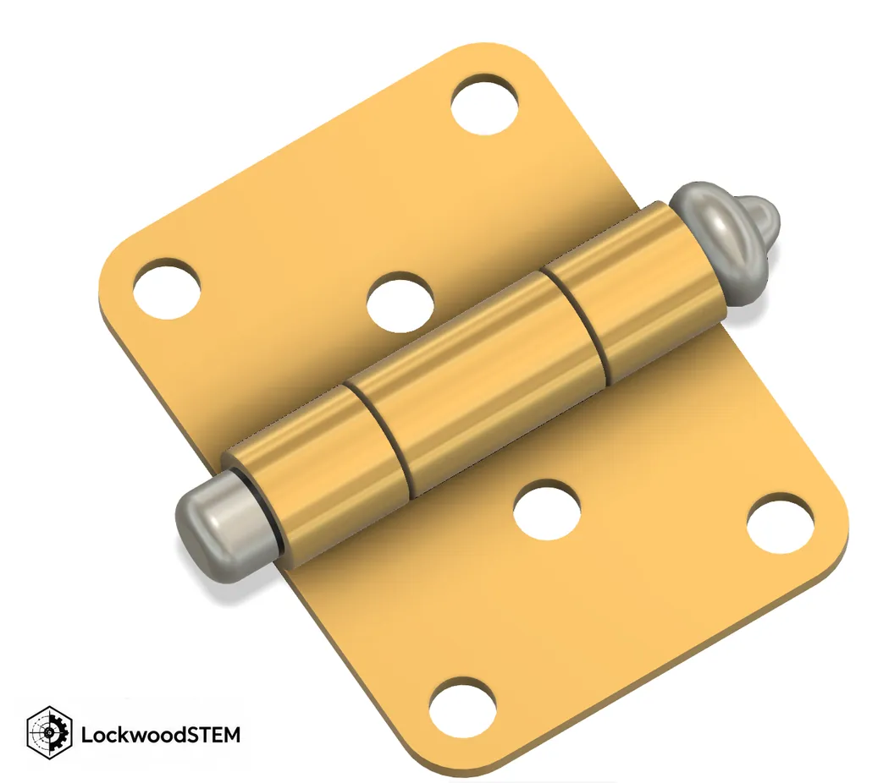

The engineering idea
A revolute joint removes five of six rigid-body freedoms and leaves one rotation about a pivot axis.
Focus question: How can a joint allow one component to rotate while keeping the rest of an assembly constrained?
A revolute joint removes five of six rigid-body freedoms and leaves one rotation about a pivot axis.
One base bracket + one moving arm + one pin + two spacers + one cap = six supplied parts. The arm should rotate; all fixed hardware should stay constrained.

Interpret the illustration: A revolute joint removes five of six rigid-body freedoms and leaves one rotation about a pivot axis. Treat the diagram as an explanatory model, not as a dimensioned Fusion part or an approved fabrication file.
Pause the video at relevant commands or principles and apply them to this lesson. The tutorial's sample design may differ from your teacher-supplied parts and rocket specifications.
Watch directly on YouTube ↗Official Autodesk Fusion or NASA guidance provides further diagrams and step-by-step instruction.
Primary technical reference — help.autodesk.com ↗Additional worked reference — help.autodesk.com ↗Self-study routine: read the explanation, identify a concrete command or concept, do that step in your own file, and capture evidence before proceeding.
LastName_FirstName_3_1_Hinge and insert all six supplied parts as components.One base bracket + one moving arm + one pin + two spacers + one cap = six supplied parts. The arm should rotate; all fixed hardware should stay constrained.
Check your evidence: Choose the pivot center and axis for the moving arm. Verify with the actual CAD geometry, teacher-assigned parameters or physical observations—not just with the example shown here.
When stuck: return to the lesson's diagram, review the relevant section of the video, and compare your setup with the specific checklist in the assignment below.
Change a sample parameter, then explain what it means. These are illustrative values, not measured student results or approved settings.
Rotation around one defined axis.
The grounded bracket and all hardware that is rigidly attached to it.
Identify the actual Fusion file, screenshot, drawing, PDF, video or physical measurement requested below. Save original evidence, not simply a screenshot of this webpage.
You already made a Puzzle Cube assembly using rigid joints in Unit 2. This lesson introduces controlled motion—not another body-to-component exercise.
Use the teacher-provided individual Fusion parts: 1 base bracket, 1 pivot arm, 1 pivot pin, 2 spacers, and 1 retaining cap. Do not remodel the parts.
LastName_FirstName_3_1_Hinge and insert all six supplied parts as components.Upload the following specific items to the Lesson 3.1 assignment in Google Classroom:
Submission check: Submit the actual working assembly—not a screenshot of an unassembled parts kit.
Return to the Unit 3 lesson map and project sequence.
Return to the IED course hub.
Student: ______________________________________ Period: ______ Date: __________
Key concept: A revolute joint removes five of six rigid-body freedoms and leaves one rotation about a pivot axis.
Refer to the What to Submit section of this lesson for exact files and filenames.